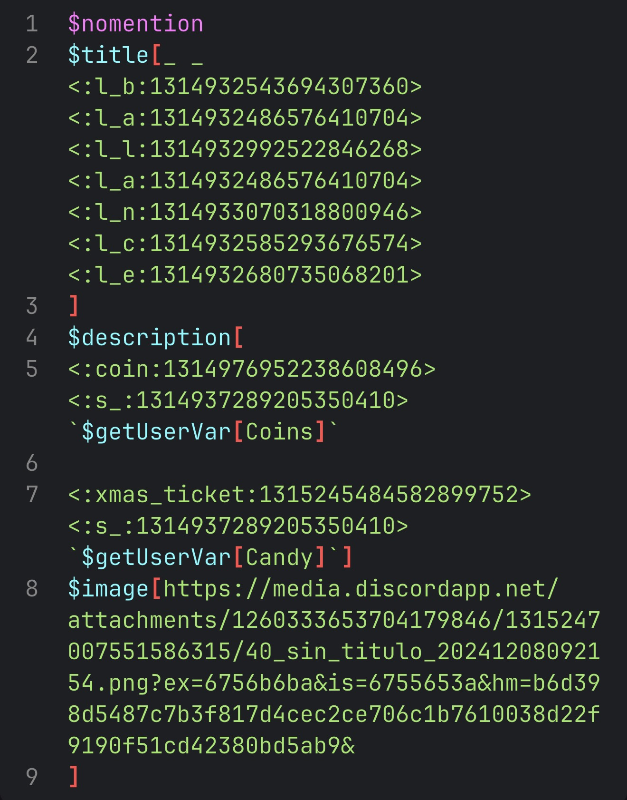

Game Development
I am developing my own mini-game app, starting with a 2D pixel-art game and later exploring 3D experiences.
01 - Get to know me I am a curious, creative and ambitious student who loves finding out how ideas become meaningful products and services. Studying Business has strengthened my understanding of organisations, decision-making, technology and innovation.
Outside the classroom, I enjoy taking initiative and learning independently. I have become increasingly addicted to coding and engineering exploration, and every project teaches me something new. Through work experience and this portfolio, I have developed my communication, problem-solving and adaptability while documenting a journey I am genuinely excited to continue.
Curiosity sparks ideas, creativity gives them shape, and determination brings them to life.
Currently studying a Pearson BTEC Level 3 National Extended Diploma in Business.
English (fluent), Spanish (fluent), Italian (intermediate).
Creative thinking, communication, problem-solving, adaptability and independent learning.
Business development, technology, marketing and innovation.
I enjoy taking initiative, exploring new ideas and developing practical solutions to challenges.
To continue developing my knowledge and explore opportunities where business, creativity and technology come together.
I am fascinated by creativity and technology, especially the process of turning ideas into practical solutions that can genuinely make something better.
I enjoy understanding how components work together and how ideas become useful products. Engineering combines creativity, technical thinking and problem-solving. I am interested in designing solutions that improve everyday life.
Coding allows ideas to become interactive and functional digital products. Through Python, Discord bot development and this website, I have seen how code turns concepts into practical projects. I want to continue building more complex systems and improving my technical skills.
I use creativity to imagine possibilities and approach challenges from different angles. I enjoy seeing an idea develop into a finished, functional result. I am interested in combining imagination with technical knowledge to create innovative solutions.
Studying Business has shown me how technology, marketing and customer needs influence success. I am interested in international opportunities and in how organisations turn innovative ideas into useful products. I hope to combine commercial awareness with technology in future work.
I want to keep learning and challenge myself academically and professionally. By developing my engineering and technology skills, I hope to create innovative products and meaningful solutions in the future.
A friend's introduction to Discord bots sparked my interest in coding, and I immediately wanted to understand more about how it worked. I began creating servers and taking on administrative responsibilities in several communities.
Using Bot Designer for Discord, I developed commands and a virtual currency mini-game where users could earn rewards and purchase shop items. Seeing an idea become functional strengthened my interest in programming.
This led me to choose GCSE Information Technology, where I studied computer systems and began using Python to create a calculator and a shopping basket program.
University visits and course presentations introduced me to Engineering and Computer Science.
A demonstration of a line-following car showed how programming and engineering work together in a physical product. I became curious about the sensors, code and connections behind its movement.
This experience showed me that coding can create more than digital interfaces: it can bring physical ideas and interactive systems to life. It also brought my creative and technical interests together.
To develop my skills beyond school, I revisited Python fundamentals and began independent projects because I genuinely enjoyed seeing my ideas become real.
Amazon's virtual IT work experience introduced me to technology in a large organisation. I also explored website development, completed projects for streamers and collaborated on small game-related projects.
Seeing my ideas become useful to other people made this work especially rewarding. Developing this portfolio strengthened my practical experience and motivation to continue learning.
Studying the BTEC Level 3 Extended Diploma in Business has helped me understand how technology, marketing and finance contribute to organisational success.
I have learned that strong technology also needs customers, resources and clear communication to become a successful product. Business and IT are closely connected.
I am excited to combine technical knowledge with commercial awareness and help develop useful, innovative products.
Working at Hamleys in a professional retail environment has developed my communication, teamwork and adaptability. I am particularly interested in how product quality, pricing and promotions influence customer decisions.
This placement gave me an introduction to workplace responsibilities and the daily operations of a retail business. It strengthened my understanding of organisation, customer service and teamwork.
During a week of work experience at Morrisons, I learned how the rewards app supports customer engagement. The store manager introduced me to its settings and features, and I encouraged customers to download it. This developed my communication skills and understanding of digital customer experiences.
Throughout my education and personal projects, I have developed a growing mix of technical, creative and professional skills. Python, Discord bot development and website creation have taught me how digital systems work and how to solve problems through practical experimentation. I enjoy approaching challenges creatively while using logic and persistence to improve a result, and I love continuing to learn by researching new concepts and revisiting areas I want to understand better. Working in retail and collaborating on projects has also strengthened my communication, adaptability and confidence, while giving me real experience of how to work with different people. I hope to study Engineering and Information Technology, build on these skills and explore software development, engineering design and the new technologies I am becoming increasingly addicted to creating and understanding.
 Interactive bot preview
Interactive bot preview
My first practical programming project, creating an interactive Discord bot with a virtual economy.


My first practical programming project involved creating my own Discord bot using Bot Designer for Discord (BDFD). I used commands, variables and built-in functions to make the bot interactive and useful for both server management and entertainment.
The bot included activities such as fishing, a virtual currency system and a shop where users could purchase items. I enjoyed designing features that people could interact with and watching the project become more complete as I added new commands.
One example is the balance command (~bal), which retrieves stored variables and presents a user's coins and statistics in an organised format. This project helped me understand programming logic, variables and the satisfaction of turning an idea into something others could use.
 Python in Google Colab
Python in Google Colab
Programming exercises that turn Python concepts into practical, interactive applications.
As part of my GCSE Information Technology studies, I began experimenting with Python to understand how programming could solve practical problems. I practised variables, user input, calculations, lists, loops and conditional statements.
I created a shopping list program with an interactive menu and also developed simple games, including Number Guessing and Rock, Paper, Scissors. I enjoyed testing the programs with friends and experimenting with different instructions to improve how they worked.
These projects made programming feel exciting and accessible. They helped me understand how logical instructions can create useful, entertaining applications and encouraged me to keep developing my skills.
 Website portfolio preview
Website portfolio preview
An independent portfolio project combining coding, creativity and user interface design.
Using Visual Studio Code, HTML and CSS, I began creating websites and experimenting with structure, colour, typography, images and responsive layouts. I enjoyed discovering how code could shape both the appearance and functionality of a digital experience.
I have also worked on website projects for streamers and personal ideas, which helped me adapt to different design requirements and turn visual concepts into practical pages. These projects are private, so I have chosen to showcase this portfolio as an example of my work.
This website is an independent project that brings together my interest in coding, creativity and design. I have loved developing its sections, experimenting with the layout and using each improvement as an opportunity to learn more about web development.